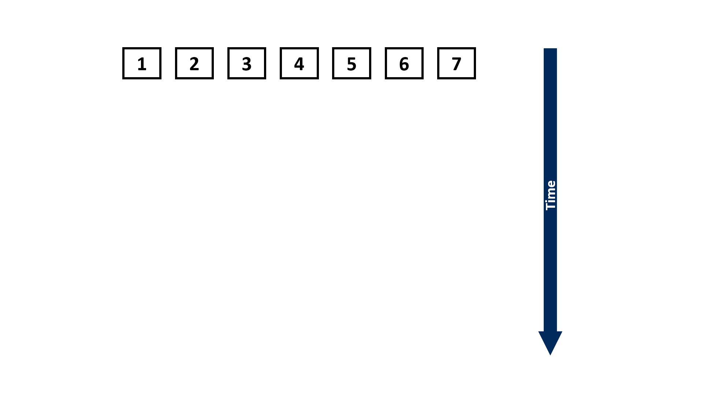

{kind=link}
Abstract
In an era when the performance of a single compute device plateaus, software must be designed to scale on
massively parallel systems for better runtime performance. However, in the context of training deep learning
models, the popular back-propagation (BP) algorithm imposes a strong sequential dependency in the process of
gradient computation. Under model parallelism, BP takes Θ(n) steps to complete which hinders its scalability on
parallel systems (n represents the number of compute devices into which a model is partitioned).
In this work, in order to improve the scalability of BP, we reformulate BP into a scan operation which is a primitive
that performs an in-order aggregation on a sequence of values and returns the partial result at each step. We can
then scale such reformulation of BP on parallel systems by our modified version of the Blelloch scan algorithm
which theoretically takes Θ(log n) steps. We evaluate our approach on a vanilla Recurrent Neural Network (RNN)
training with synthetic datasets and a RNN with Gated Recurrent Units (GRU) training with the IRMAS dataset,
and demonstrate up to 2.75× speedup on the overall training time and 108× speedup on the backward pass. We
also demonstrate that the retraining of pruned networks can be a practical use case of our method.
What is the back-propagation (BP) algorithm?
Back-propagation is used for computing the gradients during the training of deep learning (DL) models. The key idea of this algorithm is that we could get the gradients of the training loss with respect to the inputs of an operator by multiplying the transposed Jacobian of this operator with the gradients of the training loss with respect to the outputs. Since a DL model usually can be thought of as a computational graph of different types of operators (e.g., Conv2d, Linear, ReLU, etc.), BP enables us to calculate the gradients of the training loss with respect to every part of the model, one operator at a time recursively. The following animation demonstrates BP's key idea:

From the animation above, we can see that BP imposes a strong sequential dependency across operators. When one operator is currently computing the gradients, the topologically earlier operators have to wait until it finishes. Thus, this strong sequential dependency could potentially cause underutilization of the underlying hardware resource, if the gradient computation of a single operator only utilizes a small portion of the given hardware resource.
What is a scan primitive?
Also known as the prefix sum, scan performs an in-order aggregation on a sequence of values given a binary and associative operator, and returns the partial result at each step. The scan primitive can be easily understood from the following example:

Normally, scan can be performed in a linear and sequential approach:
Assuming the length of the input sequence is n, the above approach would take Θ(n) steps to complete. However, if we have a parallel computing system (e.g., multi-core CPUs or GPUs that are widely used for training DL models) that can execute multiple instructions concurrently, we can leverage some parallel scan algorithms, such as the Blelloch scan algorithm1, to reduce the number of steps until completion to Θ(log n):

Can we leverage the Blelloch scan algorithm to scale BP?
Indeed, since the matrix multiplication is also binary and associative, we can express the recursive formulation of BP as a scan primitive:
Consequently, we can use the same Blelloch scan algorithm to scale such reformulation of BP on parallel systems for better utilization of hardware resource:
Wanna learn more about BPPSA?
Unfortunately, BPPSA's original MLSys'20 talk was never recorded; however, a condensed version of the talk was recorded and given at COHESA'20. We recommend watching this video as an introduction before diving into our paper and code.
Citation
@inproceedings{MLSYS2020_BPPSA,
author = {Wang, Shang and Bai, Yifan and Pekhimenko, Gennady},
booktitle = {Proceedings of Machine Learning and Systems},
editor = {I. Dhillon and D. Papailiopoulos and V. Sze},
pages = {451--469},
title = {BPPSA: Scaling Back-propagation by Parallel Scan Algorithm},
url = {https://proceedings.mlsys.org/paper/2020/file/96da2f590cd7246bbde0051047b0d6f7-Paper.pdf},
volume = {2},
year = {2020}
}